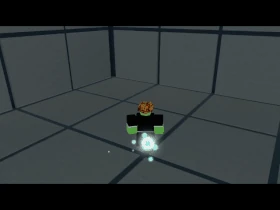
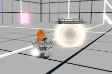
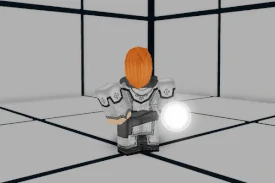
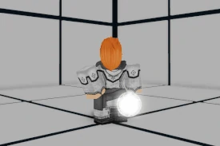

Virtue
Kaneida Manazue, also known as Virtue is a Zoner class aligned with the Purity faction. Gifted with mastery of the three elements through the use of a magical orb named Elspirit, Virtue devotes her playstyle to keeping the opponent at bay with a plethora of spells. Although she is quite fragile, Virtue yields the largest arsenal of Specials in the game, and should she know how to use them, you might find yourself in combat more akin to a boss battle or a bullet hell than a mere duel.
Lore
A foreign mage determined to redeem her lost brother, Vice. Virtue hails from a remote island village, oblivious to the struggles between Power and Purity. She and her brother were gifted with magic, a genetic talent that eluded the island's people to the point of extreme rarity. One day, though, Vice mysteriously disappeared. Virtue became obsessed with finding him -- so much so that she left her home and braved the dismal lands of Will in order to track him down. Virtue came across numerous corrupted wastelands during her years of searching, suggesting that Vice may have fallen prey to Void Energy. Virtue eventually came across the unheard of: a Lunar Guardian outside of Vaningard's walls. His name was Kurai Yagami, who deduced Phantom was responsible for the corruption of Vice. Because of this, Virtue and Kurai decided to travel together, in the hopes that they might investigate the ties between Phantom and Vice's disappearance.
Passive
Virtue sacrifices her autocombos for an Element Wheel, which allows her to choose from three different Elements. Virtue's SP2-SP4 behave differently based on which of the three Elements is currently active. Each of these Specials have three elemental variations. However, when Virtue uses one of these Specials or is inflicted with hitstun, her current Element is reset and must be reactivated.
Additionally, when successfully landing an attack, cooldowns for all of Virtue's Specials will be paused until the attack's combo ends.
Universal Skills
Guard Break
 150 damage, B Scaling, 5 second cooldown, requires 2 Heat(Ground/Air) - Virtue summons a small sphere of air in front of her and performs a reverse side kick, pitching it towards the enemy as a projectile.
Launcher
0 damage, B Scaling, 9 second cooldown(Ground/Air) - Virtue instantly summons a geyser of wind at the opponent's feet, shooting them directly upwards into the air. If Virtue lands a counterhit, she will inflict hitstun.

Light Autocombo (L.AC)
indefinite inputs, selects Element from Element Wheel
Heavy Autocombo (H.AC)
1 input, activates currently selected Element
